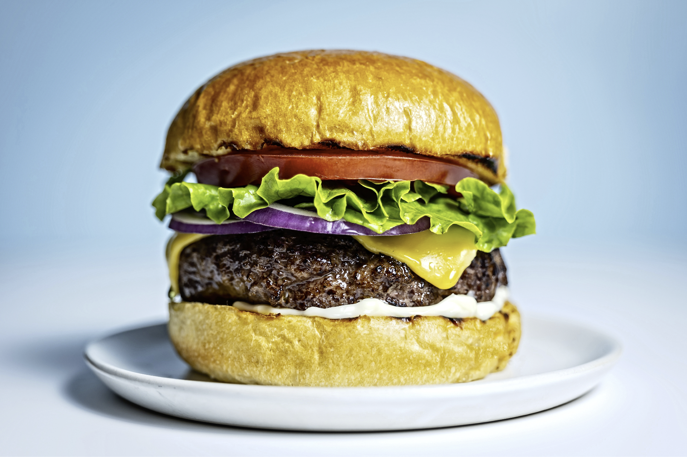

Home
Hamburger Recipe

This is a super simple recipe for making a delicous Hamburger!
Following the instructions below on how to make a simple but amazing tasting Hamburger.
Ingredients List
- 1 1/2 pounds lean ground beef
- 1/2 onion,, finely chopped
- 1/2 cup shredded Colby Jack or Cheddar cheese
- 1 large egg
- 1 (1 ounce) envelope dry onion soup mix
- 1 clove garlic, minced
- 1 tablespoon garlic powder
- 1 teaspoon soy sauce
- 1 teaspoon Worcestershire sauce
- 1 teaspoon dried parsley
- 1 teaspoon dried basil
- 1 teaspoon dried oregano
- 1/2 teaspoon crushed dried rosemary
- salt and pepper to taste
Steps
- Step 1: Gather all ingredients. Preheat an outdoor grill for high heat and lightly oil the grate.
- Step 2: Meanwhile, combine ground beef, oinion, cheese, egg, onion soup mix, minced garlic, garlic powder,
soy sauce, Worcestershire sauce, parsley, basil, oregano, rosemary, salt, and pepper in a large bowl.
- Step 3: Use your hands to form the mixture into 4 patties.
- Step 4: Cook patties on the preheated grill unitl no longer pink in the center and the juices run clear, about 4 to 5 minutes per side.
- Step 5: An instant-read thermometer inserted into the center should read atleast 165 degrees F (74 Degrees C) .